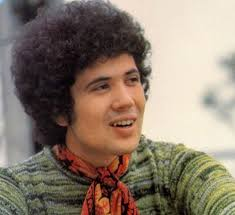

I miei cantanti preferiti
Nome
Foto
Canzoni
Vasco Rossi
Una canzone per te
Sally
Lucio Battisti

Il mio canto libero
I Giardini Di Marzo
Claudio Baglioni
Amore bello
Ninna nanna
Cliccare quì per tornare all'Homepage